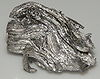

holmium

Definition: Holmium is a chemical element with the symbol Ho and atomic number 67. It is a rare-earth element and the eleventh member of the lanthanide series. It is a relatively soft, silvery, fairly corrosion-resistant and malleable metal. Like a lot of other lanthanides, holmium is too reactive to be found in native form, as pure holmium slowly forms a yellowish oxide coating when exposed to air. When isolated, holmium is relatively stable in dry air at room temperature. However, it reacts with water and corrodes readily, and also burns in air when heated.
Source: Wikipedia
Wikipedia Page
Wikidata Page